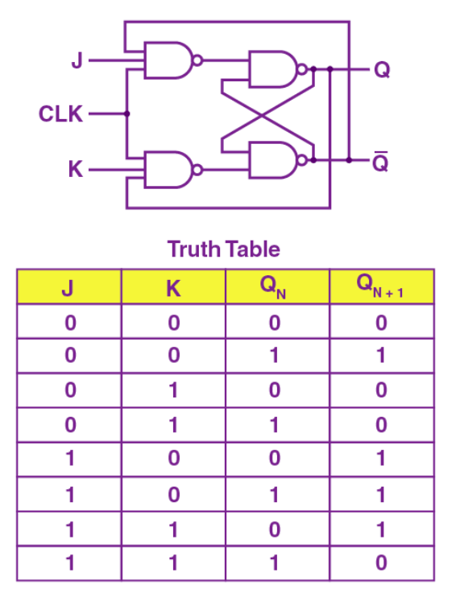

On completion of this section, you should learn
The J-K flip-flop functions somewhat similarly to an S-R flip-flop, with the first three combinations for J and K in its characteristic table being the same as for S and R.
When both J and K inputs are at 0, the output remains the same, and when both logic inputs are 1, the output of the flip-flop will toggle. Similar to the S-R flip-flop, when J is 1 and K is 0, the output will be 1, and when J is 0, and S is 1, the output will become 0.
J-K flip-flops are commonly used for things such as counters, frequency dividers, and shift registers. An example is a binary counter, where circuits increment or decrement a binary number whenever a clock pulse is received.
Characteristic tables and NAND gate representation of a J-K flip-flop
Obtained from: https://byjus.com/gate/flip-flop-types-conversion-and-applications-notes/